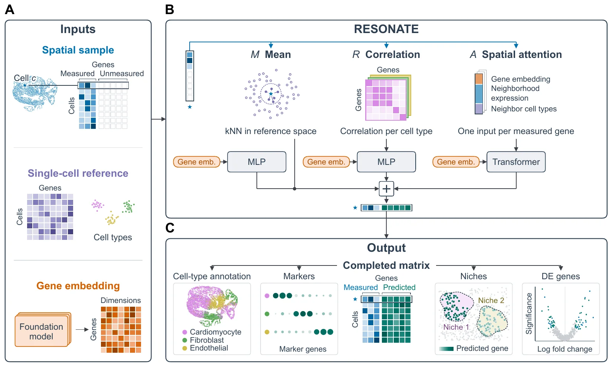
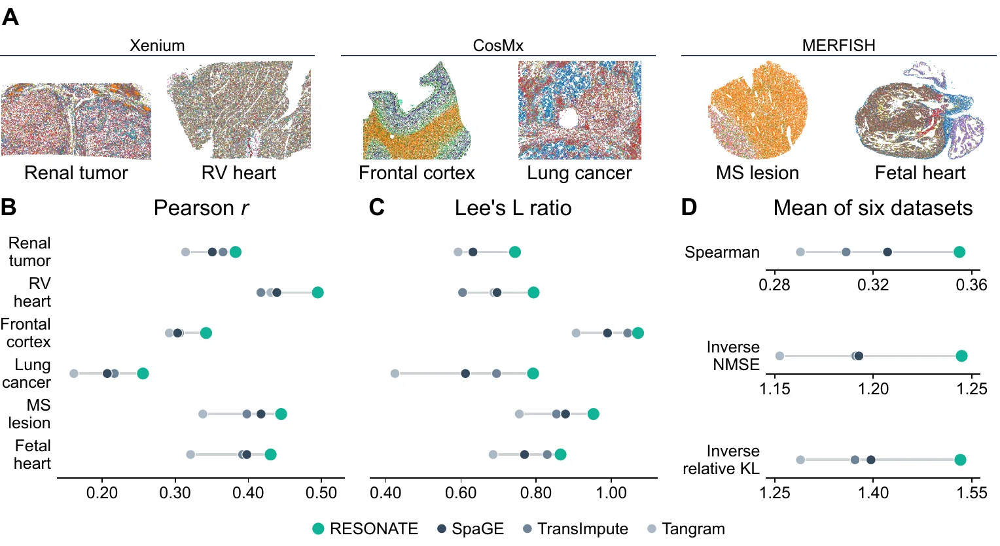
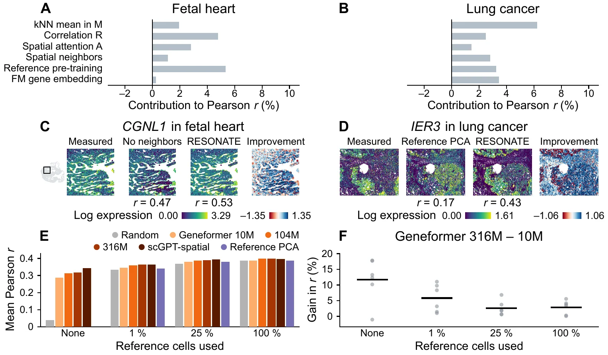
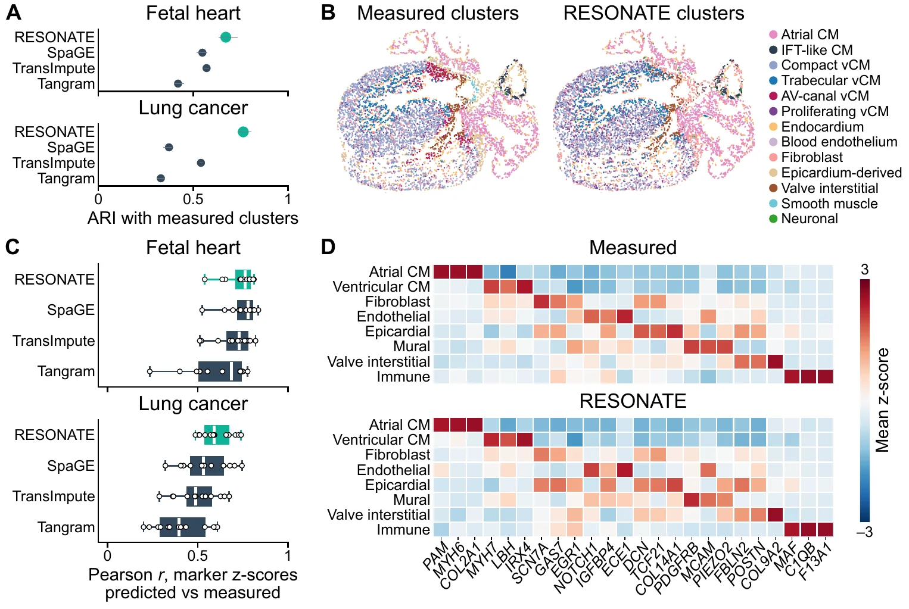

RESONATE
Predicting unmeasured genes and proteins in spatial omics from foundation models and single-cell references
Imaging-based spatial assays measure only a preselected panel of genes or proteins in intact tissue. RESONATE predicts the missing ones by combining gene embeddings from single-cell foundation models with a matched single-cell reference, the genes measured in each cell, and the cell's spatial neighbors. It had the highest mean correlation with held-out measurements on all ten datasets tested, against 14 published methods, and extends to predicting protein from RNA.
The problem
Spatial omics measures molecules in intact tissue, so each cell's profile stays tied to its position and its neighbors. Imaging-based assays such as Xenium, CosMx and MERFISH resolve single cells but measure only a panel of genes chosen before the experiment, and antibody imaging is limited to tens of proteins. Genes tied to a pathway or cell state recognized after profiling may simply be missing.
Missing genes are usually predicted from a single-cell reference, a dataset of dissociated cells from the same tissue that measures all genes. Methods such as SpaGE, Tangram and TransImpute learn what they know about an unmeasured gene from that one reference, and an earlier benchmark found that no method performed best on every dataset.
Single-cell foundation models such as Geneformer and scGPT learn an embedding for every gene from tens of millions of cells across many tissues. In spatial imputation, however, they had been used to represent cells rather than genes, and their value over simple baselines was unclear.
The key idea and how it works
RESONATE (REconstructing Spatial Omics via Neighborhood, Atlas Transfer and Embeddings) uses each gene's foundation-model embedding as a shared description of measured and unmeasured genes. Its prediction for a target gene in a spatial cell is the sum of three terms, each of which uses that embedding:
- Mean term: the gene's overall level, predicted from its embedding, averaged with its mean in the 100 reference cells most similar to the spatial cell.
- Correlation term: adjusts that level by how far measured genes that correlate with the target, within each reference cell type, deviate from their usual levels in this cell. A small neural network weights each partner gene using both genes' embeddings.
- Spatial attention term: a transformer reads the measured genes of the cell and its 15 nearest spatial neighbors, and the target gene's embedding attends over them to pick out relevant information.
Because it has no gene-specific parameters, the model is trained to predict genes hidden from its input, first in reference cells and then in the spatial section, and is then applied unchanged to genes outside the panel.

Accuracy across ten datasets
The main benchmark used six imaging-based datasets: Xenium renal tumor and right-ventricular heart, CosMx frontal cortex and lung cancer, and MERFISH multiple-sclerosis lesion and fetal heart. In each, 20% of the panel genes were hidden from every method, for three disjoint hidden sets, and accuracy was the Pearson correlation between predicted and measured expression in test cells. RESONATE was compared with 14 published methods.
- Highest mean Pearson correlation on all six datasets and in all 18 combinations of dataset and hidden set: 0.392 on average, 11.2% above the 0.353 of SpaGE, the strongest competitor overall.
- The best published method changed from dataset to dataset, and RESONATE exceeded it by 4.7% to 18.0%. Gene by gene, it beat SpaGE on 878 of 967 scored genes.
- First on six-dataset averages of Spearman correlation and two error measures, and the highest Lee's L ratio, a score of spatial-pattern agreement, on every dataset.
- Highest Pearson correlation on four sequencing-based datasets as well (Visium HD, Visium, Slide-tags and Stereo-seq), 2.7% to 14.9% above the best published method.

What each ingredient contributes
Removing one component at a time lowered mean correlation in both fetal heart and lung cancer, by modest amounts. In fetal heart, the drop was 5.3% without reference pre-training, 4.8% without the correlation term, 2.8% without spatial attention and 2.0% without the reference-neighbor mean; in lung cancer, the intervals for the correlation and attention terms included zero. Without spatial-neighbor features, the model missed a band of CGNL1 expression in fetal heart that the full model reproduced.
The foundation-model embedding mattered most when the reference was small. With no reference cells at all, the scGPT-spatial embedding kept a six-dataset mean correlation of 0.343, 86% of its full-reference 0.397. The largest Geneformer embedding (316M parameters) beat the smallest (10M) by 11.7% without a reference but by only 2.9% with the full one, where all foundation-model embeddings and a simple reference-derived (PCA) embedding scored between 0.386 and 0.399.
Individual genes can still benefit. IER3, which tissue dissociation induces, followed stress genes in the lung-cancer reference but epithelial genes in the tissue, and its correlation rose from 0.17 with the reference-derived embedding to 0.43 with the foundation-model one.

Biology beyond the panel, and protein
With every panel gene predicted while hidden (five gene sets, each predicted from the other four), clusters of the predicted data matched the measured clusters with an adjusted Rand index of 0.672 in fetal heart and 0.764 in lung cancer, versus 0.570 and 0.541 for the closest competitor, TransImpute. In fetal heart, 20 of 24 cell-type markers were predicted highest in their own cell type.

For genes outside the panels, which have no spatial measurement, the predictions followed differences reported in earlier studies:
- Fetal heart: NPPA was higher in right-atrial than in inflow-tract-like cardiomyocytes (Cohen's d 6.17), the pacemaker gene HCN1 showed the reverse (d 2.47), and NPPB was higher in trabecular than in compact ventricular cardiomyocytes in all four sections.
- Lung cancer: a TCF7+ T-cell program was higher in B-cell-rich aggregates than in tumor nests (all four patients), and a hypoxia program was higher in cancer cells at least 90 µm from the nearest endothelial cell (all five patients).
- RESONATE showed all five differences more strongly than SpaGE, TransImpute and Tangram.
Trained on a CITE-seq reference, which measures RNA and surface proteins in the same cells, RESONATE also predicts protein from spatial RNA. Against 11 published methods, it had the highest mean Pearson correlation in renal tumor (0.431 versus 0.404 for Seurat) and breast cancer (0.260 versus 0.249). Identifying immune cells from predicted protein was mixed: RESONATE led in renal tumor, but in breast cancer every method stayed near chance.
Why it matters
Imaging time, probe crowding and antibody validation limit how many features a spatial assay can measure, so predicting unmeasured ones complements direct measurement. RESONATE shows that gene embeddings from single-cell foundation models can be repurposed for this task and help most when a matched reference is small or missing. Larger Geneformer embeddings gave better predictions, which suggests further gains as foundation models improve.
The agreements with published biology are group-level contrasts and do not validate individual cell values, and, as with any imputation method, false signals are possible.
Recognition
- Second Best Overall Poster, JHU Data Science & AI Institute Fall 2026 Symposium
- Invited talk at the single-cell meeting of Prof. Kellie Smith's lab, Bloomberg~Kimmel Institute for Cancer Immunotherapy (Nov 2026)
- Talk at the JHU GU Oncology Grant Rounds Seminar (Dec 2026)
- Supported by a Provost's Undergraduate Research Award (2026)